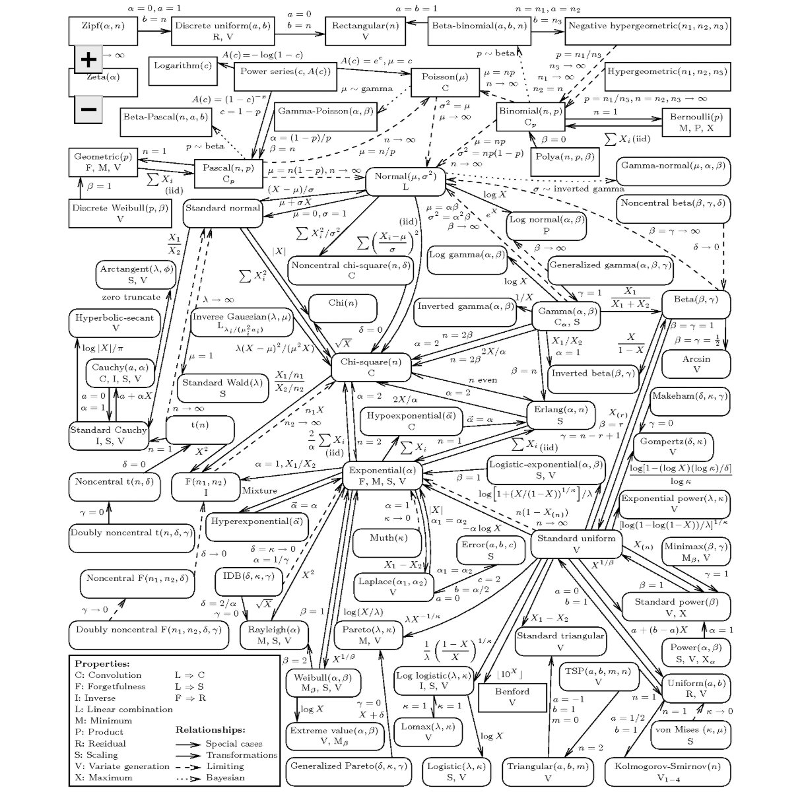

Animations mathématiques
Remarques générales:
- Les exemples et animations présents sur cette page sont publiés avec l’autorisation de Madame Françoise Foucher, responsable du cours de Mathématiques pour l’ingénieur à l’ECN;
- Sur cette page, il n’y aura pas de théorie, juste des jolies figures associées à des exercices de travaux pratiques.
- Mes remerciements vont à Barbara Pascal pour m’avoir donné le code qui m’a permis de générer ces animations ;)
Exemples proposés:
- Optimisation par recherche linéaire;
- Optimisation linéaire sous contraintes;
- Simulations de lois de probabilité et convergence des variables aléatoires;
- Inférence statistiques.
Optimisation par recherche linéaire:
Faire une ref vers le Nocedal
Optimisation libre:
Optimisation sous contraintes:
Optimisation linéaire sous contraintes:
Une série d’exemples issus de la
Recherche Opérationnelle et plus particulièrement de l’
optimisation combinatoire.
Un bon bouquin de référence est le
Wolsey.
Problème de maximisation
Le problème à résoudre est: $$ (\mathcal{P}): \quad \max_{\boldsymbol{x}\in \mathbb{R}^{3} }\quad f(\boldsymbol{x}) \quad \textrm{st. } \quad \boldsymbol{x} \in \mathbf{K} $$ où
- $f(\boldsymbol{x})$ est la fonction objectif définie par: $$ f(\boldsymbol{x}) := 155x_{1} +160x_{2}+150x_{3} $$
- $\mathbf{K}$ est un ensemble de contraintes défini par:
- $16x_{1} + 13x_{2}+17x_{3} \leq 180$
- $27x_{1} + 15x_{2}+ 11x_{3} \leq 160$
- $\sum_{i=1}^{3} x_{i}=12$
- $\boldsymbol{x} \geq 0 \Longleftrightarrow x_{i} \geq 0 \quad \forall i \in \{1,2,3\}$
Les solveurs peuvent le faire à votre place, mais un bon moyen de résoudre ce problème revient à appliquer une approche polyédrale; des exemples de cours sont donnés ici ou là.
Visuellement, la résolution du problème $(\mathcal{P})$ est proposé dans l’animation suivante:
La solution optimale $\boldsymbol{x}^{*}$ au problème $(\mathcal{P})$ est donné par le point rouge.
Problèmes de minimisation
Approche Polyèdrale
TODO: mettre un lien vers l’algorithme du simplexe
Approche par méthodes des flots dans un graphe.
Simulations de lois de probabilité et convergence des variables aléatoires:
Comme indiqué dans le titre, cette section s’intéresse à la simulation de lois de probabilité. Mais on part déjà avec un problème, l’ordinateur est
déterministe.
Cependant, l’ordinateur génère efficacement des $0$ et des $1$.
Pour le coup, on ne peut pas dire que l’on va simuler un vrai comportement aléatoire, on parlera plutôt de générateur pseudo-aléatoire à partir d’une loi uniforme sur $[0,1]$, notée $\mathcal{U}([0,1])$, en fixant une graine (seed) au préalable.
La solution pour simuler un comportement pseudo-aléatoire avec un ordinateur est de produire une suite de nombres, suffisamment imprévisible, pour permettre d’imiter une suite $(u_{n})_{n\in \mathbb{N}^{*}}$ de variables aléatoires indépendantes de loi mère $\mathcal{U}([0,1])$.
À partir de ça, il existe des formules de transformation qui permettent de générer des lois plus complexes à partir d’une loi $\mathcal{U}([0,1])$.

Source: Univariate Distribution Relationships - Leemis & McQueston (2008).
Simulations de loi usuelles
Loi uniforme $ X \sim \mathcal{U}([0,1])$
Voici un premier de simulation de la loi uniforme, c’est joli non ?
Deux parties sur ce graphique:
- En haut sont représentés les tirages en utilisant la fonction rand().
- En bas, nous utilisons l’histogramme pour regrouper les observations dans des classes identiques et où la surface de chaque est une approximation de la densité de probabilité (pour des lois continues).
Les calculs de l’espérance et de la variance sont réalisés à partir des moment d’ordre 1, 2 et de la formule de König-Huygens
%Get the total number of draws for X simulation.
N = length(x);
% Use matlab to automatically sort observations into 10 classes.
[n_elem,cent] = hist(x);
% Determine the width of a class from the difference between class centers.
h = cent(2) - cent(1);
ci = cent;
hauteurs = n_elem/(N*h);
f_ci = hauteurs*h ;
% Using definition of expected value: |E(X) = sum_i f_X(ci) * ci
% => We use a discrete approximation of the continuous pdf ... so it's a sum and not an integral.
E_hat = ci*(f_ci');
% Second order moment
ci2 = cent.^2;
% König-Huygens Formula
V_hat = ci2*(f_ci') - E_hat^2;
Loi binomiale $ X \sim \mathcal{B}(n,p)$
La même chose mais cette fois-ci avec la binomiale :
Loi normale $ X \sim \mathcal{N}(\mu,\sigma^{2})$
Enfin, un troisième exemple avec la loi incontournable en probabilité et statistique:
Si on voit que les valeurs de l’espérance et de la variance empiriques sont un peu éloignées des valeurs théoriques, deux possiblités:
- augmenter le nombre de tirage et attendre de voir ce que ça donne;
- appliquer des méthodes de réduction de variance, mais c’est pas au programme.
Le Théorème Central Limite
Bon en gros, tout est normal
Loi forte des grands nombres
C’est un résultat de convergence assez puissant qui s’énonce comme suit:
Si $(X_{n})_{n\in\mathbb{N}}$ est une suite de variables aléatoires iid telle que $X_i \in \mathcal{L}^{1}(\Omega)$ avec $\mathbb{E}(X_i) = m$ $\forall i \in \{1,…,n\}$, alors $$\bar{X}_n = \frac{1}{n} \sum_1^n X_i \overset{ps.}{\to} \mathbb{E}(X_i) = m \text{ quand } n \to +\infty.$$ Dans le cas où $X_i \in \mathcal{L}^{2}(\Omega)$ avec $\mathbb{E}(X_i) = m$, on obtient un résultat similaire en étudiant la somme des $X_i - m$ et on prouve sa convergence vers $0$.
Donc pour faire simple, cette loi nous dit qu’à partir d’une suite de variables aléatoires, on va converger presque sûrement vers une quantité déterministe $m\in \mathbb{R}$.
On peut illustrer graphiquement ce résultat pour:
- la loi uniforme $\mathcal{U}([0,1])$:
- la loi de Poisson $\mathcal{P}(\lambda)$ avec $\lambda \in \mathbb{R}_+^*$:
Application d’une méthode Monte Carlo pour approcher $\pi$
Une application directe des résultats qui sont présentés dans cette partie est la méthode de
Monte-Carlo (Metropolis & Ulam, 1949) qui permet de calculer une valeur numérique approchée en utilisant des procédés aléatoires […] (Source:
Wikipédia) et est assez utile pour calculer, par exemples, des intégrales compliquées.
L’idée générale pour le calcul d’intégrales avec une méthode Monte-Carlo (MC) est:
- Interpréter l’intégrale comme un espérance;
- Calculer cette espérance comme une moyenne;
- Appliquer la loi forte des grands nombres.
Un exemple assez standard est l’approximation de $\pi$ par une pluie aléatoire (adapté du cours
Aléatoire : une introduction aux probabilités - Partie 2).
L’idée générale derrière cette approximation est de calculer $\pi$ comme le rapport entre les surfaces d’un disque unitaire $D:=\left(C=(0,0),r=1\right)$ et celle du carré $C$ dans lequel $D$ est inscrit. En tirant une séquence de couple $(X,Y)$ avec $X,Y\sim \mathcal{U}([-1,1])$, on peut exprimer la probabilité $(X,Y)\in D$ comme le rapport de surface:
$$
\mathbb{P}\left((X,Y)\in D\right):=\frac{\textrm{surface}(D)}{\textrm{surface}(C)} = \frac{\pi}{4}
$$
En exprimant le rapport des surfaces sous forme d’intgrale (on vit dans un domaine continu…), on obtient:
$$
\mathbb{P}\left((X,Y)\in D\right) = \int\int_{\{x^{2}+y^{2}\leq 1\}} \textrm{d}x\textrm{d}y
\times
\left( \int\int_{\{-1\leq x, y \leq 1\}} \textrm{d}x\textrm{d}y \right)^{-1}
$$
On va pas se mentir, c’est assez moche, mais simple à approcher avec une méthode MC.
Pour aller plus vite, on peut se restreindre au calcul d’un quadrant unique et tirer les couples $(X,Y)$ tels que $X,Y\sim \mathcal{U}([0,1])$ ; le résultat d’une simulation MC pour approcher la valeur est $\pi$ est présenté ci-dessous: On peut voir que l’augmentation du nombre de tirage permet de converger vers une valeur approchée de $\pi$
Inférence statistiques:
Il s’agit dans cette partie de déterminer un estimateur du paramètre d’une loi de probabilité donnée.
On prend, par exemple, le cas d’une élection entre deux candidats $C_{1}$ et $C_{0}$ et on définit une variable aléatoire $X_{i} \in \left\{0,1\right\}$ qui représente la préférence d’un citoyen telle que
- $X_{i}=1$ si il préfère le candidat $C_{1}$;
- $X_{i}=0$ si il préfère le candidat $C_{0}$.
De manière générale en probabilité et statistique, la précision augmente avec le nombre d’observations; dans notre cas, il va donc falloir sonder un grand nombre d’électeurs noté $N$.
A partir des préférences recueillies, on va chercher à estimer la proportion $p$ de suffrages qui préfèrent le candidat $C_{1}$ et déduire un intervalle de confiance $I_{n}$ pour un risque $\alpha \in \mathbb{R}_+$ (parce qu’on peut se tromper).
La modélisation de ce problème peut se faire en remarquant que les intentions de vote collectées sont un $N$-échantillon de loi mère $X_i\sim \mathcal{B}(p)$ avec $X_{i}(\Omega) \in \{0,1\}$ $\forall i \in \{1,…,N\}$ .
On sait de plus que la proportion $\bar{p}$ admet un estimateur des moments d’ordre 1 noté $\bar{X}_{n}$ qui possède des chouettes propriétés $\forall n \in \{1,…,N\}$:
- il est sans biais ie. $\mathbb{E}(\bar{X}_{n}) = p$;
- il converge presque sûrement vers $p$;
- puisque $X_{i} \in \mathcal{L}^{2}(\Omega)$, il admet un moment d’ordre 2 et une variance $V(\bar{X}_{n})$ qui converge vers 0 quand $n\rightarrow+\infty$.
L’expression de cet estimateur est donnée par: $$ \bar{X}_{n}:=\frac{1}{n} \sum_i^n X_i \quad \forall n \in \{1,…,N\} $$
Comme on chercher un estimateur d’une quantité inconnue, on construit un intervalle de confiance $I_{n}$ au risque $\alpha\in \mathbb{R}_+$ de se tromper. En appliquant le TCL et la propriété de convergence ps. de $\bar{X}_n$, on peut calculer l’erreur d’estimation:
$$ \epsilon_{n}:= z_{\frac{\alpha}{2}} \sqrt{ \frac{\bar{X}_{n} (1- \bar{X}_n )}{n}} \quad \forall n \in \{1,…,N\} $$ où $z$ est le quantile d’ordre $\alpha$ pour la loi $\mathcal{N}(0,1)$.
L’intervalle de confiance pour l’estimateur $\bar{X}_{n}$ s’exprime tel que:
$$ I_{n} := [ \bar{X}_{n} -\epsilon_{n},\bar{X}_{n}+\epsilon_{n}] \quad \forall n \in \{1,…,N\} $$
Maintenant qu’on a tout ça, on peut construire l’estimateur et l’intervalle de confiance associé à la victoire de $C_{1}$ dans le cas où la population préfère le candidat $C_{1}$ à 51% et ceci:
- au risque $\alpha = 5$% par pas de 100
- au risque $\alpha = 1$% par pas de 500
Je vous laisse étudier les comportements obtenus. A partir des graphiques présentés, on peut voir les tailles d’échantillons $n\leq N$ pour lesquelles on s’est trompé et, en modifiant un peu la simulation, vérifier le niveau asymptotique $1-\alpha$ de $I_{n}$ $\forall n \in \{1,…,N\}$.
Note : Il s’agit d’un exemple pour un estimateur paramétrique par la méthode des moments, mais il existe d’autres méthodes pour calculer des estimateurs eg. le maximum de vraisemblance.
Extra:
Deux fiches synthèses sur les principales commandes Matlab à garder en tête: